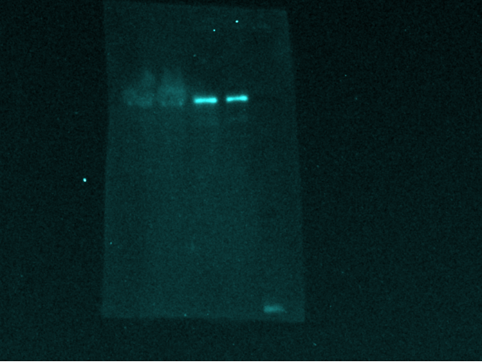
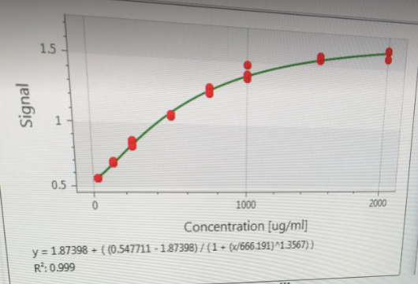

| cv (%) | |
|---|---|
| A | 2.27 |
| B | 0.96 |
| C | 3.75 |
| D | 1.64 |
| E | 1.12 |
| F | 2.77 |
| G | 1.04 |
| H | 0.19 |
| P1 | 8.09 |
3 Labrapport
3.1 Introduksjon
Proteiner gjør det meste av arbeidet i cellene i kroppen, og er nødvendig for strukturen, funksjonene og reguleringen av kroppens vev og organer. De er essensielle deler av organismen, og deltar praktisk talt i alle prosesser i kroppen (Alberts, Johnson, and Lewis 2002). Det å kunne analysere proteiner vil derfor være av stor betydning, og svært interessant å se på innen ulike fagområder, som celle- og molekylærbiologi.
Det å studere protein og proteinkonsentrasjonen i muskelceller har blitt brukt i flere treningsstudier (Stec et al. 2016; Hammarström et al. 2020). Den biologiske tilpasningen til motstandstrening varierer mellom personer, på bakgrunn av variabler som treningsvolum, intensitet, repetisjoner og frekvens av treningsøktene (“Progression Models in Resistance Training for Healthy Adults” 2009). I tillegg til at genetiske og epigenetiske disposisjoner og miljøfaktorer spiller en rolle for variasjoner i tilpasninger (Timmons 2011). Ved å studere protein kan man se på blant annet interaksjon, lokasjon og aktiveringsstatus av ulike proteiner. Dette kan for eksempel brukes for å fremme gunstige treningstilpasninger.
I denne labbrapporten har vi gjort en protein ekstraksjon og analyse. Én frivillig person meldte seg til å ta en mikrobiopsi fra vastus lateralis, i venstre og høyre bein. Personen gjennomførte eksentrisk beinpress til utmattelse på venstre bein før prøvetaking. Vi var interessert i å se på det fosforylerte p-70 proteinet til denne personen, og forskjellen i konsentrasjonen mellom venstre og høyre bein. Prøvene ble tatt på Høgskolen i Innlandet, 30.oktober 2023. Resterende prøver som er analysert er hentet fra mikrobiopsi fra én trent- og én utrent person. I denne analysen var vi interessert i å se på UBF-proteinet, og sammenlikne konsentrasjonen av dette proteinet mellom personene.
3.2 Teori
Det er individuelle forskjeller på adaptasjoner til styrketrening, målt i muskelstyrke og muskelmasse, og dette korrelerer med muskelcelle-karakteristikker i hvile og under trening (Terzis et al. 2007; Raue et al. 2012; Thalacker-Mercer et al. 2013; Stec et al. 2016). Hemmelse av proteinet mTORC1 svekker proteinsyntesen hos mennesker (Drummond et al. 2009), mens aktivering av proteinet S6-Kinase 1 (S6K1/p-70), som ligger nedstrøms for mTORC1, gir en økning i proteinsyntesen og påfølgende økning i muskelvekst (Terzis et al. 2007; Burd et al. 2010). Et økt treningsvolum vil føre til større fosforylering av S6K1, og dermed markante tilpasninger gjennom gjentatte episoder med økt proteinsyntese (Burd et al. 2010; Terzis et al. 2010; Ahtiainen et al. 2015). Dette er grunnen til at vi ønsker å se på konsentrasjonen av p-70 i det beinet som har trent til utmattelse, mot det beinet som ikke har trent rett før prøvetaking.
Det er korrelasjon mellom mengden UBF-protein i cellene, og hastigheten på ribosomal DNA-transkripsjon i hvilende og serum-stimulerte celler (Glibetic et al. 1995). Mitotisk cellevekst krever kontinuerlig ribosombiogenese, som er nødvendig for å støtte proteinsyntesen. Desto raskere cellene går gjennom cellesyklusen, desto raskere må ribosombiogenesen skje. Denne prosessen begrenses av hastigheten på transkripsjonen av rRNA-genene (rDNA). Det betyr at dersom konsentrasjonen av UBF i cellene er stor, vil transkripsjonen av rDNA gå raskere. Dette er med på å styre produksjonen av ribosomer, og de er essensielle for proteinsyntesen og cellevekst (Glibetic et al. 1995). Dette er grunnen til at vi ønsker å se på konsentrasjonen av UBF-proteinet i beinet til én trent person versus en utrent.
For å analysere de aktuelle proteinene ble det brukt en metode kalt Western blot. Western blot er en immunologisk metode som brukes i celle- og molekylærbiologi. Teknikken brukes for å separere og identifisere spesifikke proteiner fra en kompleks blanding av proteiner ekstrahert fra celler. I Western blot blir en blanding av proteiner separert basert på molekylvekt og dermed type, gjennom gel-elektroforese. Resultatene overføres deretter til en membran, som produserer et bånd for hvert protein. Membranen inkuberes deretter med merkede antistoffer spesifikke for det ønskede proteinet (Yang and Mahmood 2012).
De ubundne antistoffene vaskes bort, slik at det kun er de bundne antistoffene til proteinet som man er interessert i blir igjen. De bundne antistoffene detekteres ved fremkalling av film. Siden antistoffene bare binder seg ved de proteinene av interesse, skal kun ett bånd være synlig. Tykkelsen på båndet samsvarer med mengden protein som er til stede. Western blot er en nyttig teknikk proteindeteksjon der man får muligheten til å kvantifisere proteinuttrykk (Yang and Mahmood 2012).
3.3 Metode
3.3.0.1 Prøvemateriale
En frivillig på gruppa meldte seg til å ta en mikrobiopsi fra vastus lateralis i både venstre og høyre ben. Vedkommende hadde trent styrke på formiddagen, men gjennomførte 10 sett eksentriske benpress med venstre fot til utmattelse. Derfor var vi interessert i å se på fosforylert p-70 protein. Resterende prøver vi analyserte var fra en mikrobiopsi fra en trent person mens andre var fra en utrent person. Her var vi interessert i å se på UBF-proteinet.
3.3.0.2 Oppsett og utgangspunkt for analyse
Til det vi gjorde i labben fikk vi ferdig behandlet muskelvev som var fryst ned over natta. Western blot og bestemmelse av total proteinkonsentrasjon ble gjort i motsatt rekkefølge, samt at prøven hvor det ble bestemt total proteinkonsentrasjon var en vilkårlig tilgjengelig prøve av tørt muskelvev som vi fikk utdelt.
Muskelbiopsien fra den frivillige ble homogenisert av bioingeniør som beskrevet under metoden. Det ble ikke bestemt proteinkonsentrasjon, men prøven ble også fortynnet i Laemmlibuffer (Bio-Rad) til å ha en konsentrasjon på 1.5-2.0 µg/µl. Løsningen ble kokt i 5 min, 95 ℃. Kjølt ned til romtemperatur og sentrifugert for å få ned kondens før vi begynte på Western blot slik det er beskrevet.
3.3.0.3 Western Blot
Elektroforesekammeret ble lagt på is og fylt med buffer. Gelen vasket vi med ultrarent vann (dH2O) før den ble lagt i kammeret. Tilsatte 5 µl standard proteinstige, og 25 µl prøve (duplikat av hver) til gel etter skjema. Alt vi tilsatte ble vortexet og sentrifugert før pipettering. Satte i kjøleskap (4 ℃) og kjørte elektroforese i 30 min, 300 volt.
Demonterte gelen og la i overføringsbuffer med proteinside opp. Membraner som proteinene skulle bli overført til klippet vi i ene hjørnet og plasserte i methanol for å aktivere dem. Stod på shaker i 5-10 min. Våtgjorde 2 filterpapirer i overføringsbuffer og plassert oppå gelen, snudde rundt og fjernet dem forsiktig sammen. Svamp som var vasket med dH2O og hvor vannet var presset ut la vi i bunn i monteringsbrett (svart side ned). Helte oppi overføringsbuffer og plasserte filterpapiret med gel oppå svampen, fjernet eventuelle bobler. Til slutt la vi membranen oppå gel, med svamp på toppen og lukket igjen. La i overføringskammer som lå på is, fylte med overføringsbuffer og satte spenning på konstant 100 volt i 30 min.
Neste steg var å sjekke om vi fikk overført proteiner til membran og kutte overflødig membran. Dyppet membran raskt i dH2O, la i MemCode sensitizer og satt på shaker i 2 min. Deretter la vi i MemCode reversible stain, og på shaker i 1 min. Dyppet så raskt 3 ganger i MemCode destain og ristet litt for å få det til å dekke membranen. Dekket membran med methanol/destain-løsning (blandet 1:1) og satte på shaker i 5 min. Skylte med dH2O før vi tok bilde av membraner. Fortsatte med å legge i eraser/methanol-løsning (blandet 1:1), på shaker i 10 min. Vasket 4 ganger med dH2O og kuttet membranen etter hvilke brønner vi hadde brukt. La over i TBS for lagring.
Deretter blokkerte vi membranen med melkeproteiner på de stedene hvor det ikke allerede er proteiner. La membran i blokkeringsløsning (2.5 % melk blandet med TBS-T) i 1 time i romtemperatur på shaker. Før vi helte ut blokkeringsløsningen og renset i TBS. Primær antistoffet som ble brukt tilsatte vi oppi en løsning (5 % melk i TBS-T), før vi inkuberte membraner i løsningene over natten i 4 ℃. Antistoffene er fortynnet 1:200 i melkeløsningen. Prøvene fra høyre og venstre bein til den frivillige fra gruppa ble lagt i p-70 antistoff fra 2.november. Mens de andre to prøvene vi hadde fra en trent og en utrent person i et annet prosjekt ble lagt i UBF-antistoff fra 2017 (t-UBF).
Neste dag vasket vi for primærantistoff før vi tilsatte sekundær antistoff. Vasket med TBS-T, 2 x 1 min + 3 x 5 min på shaker. Tilsatte sekundær antistoff (anti-mouse igG) til 2.5 % melk/TBS-T-løsning, i forholdet 1:3000. Brukte to ulike produsenter, membranen med p-70 primær antistoff ble lagt i anti-mouse igG fra Cell signaling, mens resterende i antistoff fra Thermo Fisher. Stod på vippebrett i 1 time i romtemperatur. Etterpå vasket vi med TBS, 4 x 5 min på shaker. Inkuberte membranen i ECL-løsning i 5-10 min, la den på platen for å ta bilde.
3.3.0.4 Homogenisering av muskelvev
Tørr muskelprøve veies, brukte 1.88 mg tørrvekt. Tilsatte protease/phosphatase inhibitorer til en iskald lysis buffer (Hepes buffer), 500 µl Hepes buffer og 5 µl inhibitorer. Viktig at prøven var på is til vi tilsatte Hepes buffer. Tilsatte 150 µl av blandingen til muskelprøven knuste mekanisk for hånd. Mos til det ikke er noen synlige biter igjen, første gang gikk det 20-30 sek før den ble satt på is igjen. Plasser på SB2 rotator i kjøleskap og roterte prøve i 30 min. Spinn den i 10 min på 10 000 g, 4 ℃, før vi forflyttet supernatanten forsiktig til et nytt rør uten å forstyrre pelleten. Brukte ufortynnede prøver, men resultatene var over maksimal konsentrasjon. Derfor fortynnet vi med dH2O og bestemte total proteinkonsentrasjon på en 1:1 fortynning. Konsentrasjonen bestemte vi med Bradford Assay, brukte 10 µl prøve + 250 µl reagent i hver brønn (Pierce Detergent Compatible Bradford Assay Reagent, Thermo Fisher Scientific).
3.4 Resultater
Mengden fosforylert p-70 var større i venstre bein enn i høyre bein, se Figure 3.1. Når det gjaldt homogeniseringen var det en god korrelasjon mellom signal og konsentrasjon i kontrollene og prøvene (se Figure 3.2). Gjennomsnittlig variasjonskoeffisient på signalstyrken for kontrollene var 1.7, fremstilt i Table 3.1. Det ble funnet en 350 % større signalstyrke for p-70 i venstre bein versus høyre bein. Høyre bein hadde en signalstyrke på 2758 og 4842 (gjennomsnitt = 3800), mens venstre bein hadde en signalstyrke på 14826 og 11793 (gjennomsnitt = 13309). Homogeniseringen av de andre prøvene viste at 99,9 % av variasjonen i signal kunne forklares av konsentrasjon, og at signalstyrken for proteinmengden var på 2,532, 2,166 og 2,454, henholdsvis. I tillegg viste homogeniseringen akseptabel reliabilitet (variasjonskoeffisient [CV] = 20 %).


3.5 Diskusjon
3.5.1 Homogenisering
Den relativt høye, men akseptable, CV-en fra homogeniseringen kan indikere en betydelig grad av variasjon i resultatene, noe som kan være problematisk for reliabiliteten av eksperimentet. En potensiell årsak til denne relativt høye CV-en kan være utvanningen av testløsningen som vi var nødt til å utføre for å komme innenfor målegrensen for vårt analyseapparat. Utvanning kan introdusere usikkerhet og øke variasjonen i resultatene, spesielt når det gjelder prøver med lave konsentrasjoner av målproteiner. Det er også verdt å merke at bruk av pipettespissen for å blande løsningen kan ha ført til absorpsjon av vann eller proteiner, og dette kan ha påvirket nøyaktigheten av målingene. Fremtidige eksperimenter bør derfor vurdere alternative metoder for utvanning og prøveblanding for å minimere denne typen feilkilder. Imidlertid er det verdt å merke seg at bestemmelseskoeffisienten indikerer at selve pipetteringen var vellykket, og dette gir en viss grad av tillit til nøyaktigheten av våre målinger.
3.5.2 Western blot
Western Blotting stiller høye krav til presisjon fra forskerne (Ghosh, Gilda, and Gomes 2014). Dette gjør at marginale feil, som feil mengde primærantistoff, kan føre til ugyldige resultater (Ghosh, Gilda, and Gomes 2014). Videre har inter-forsker variabilitet vist seg å være den største feilkilden, og kan utgjøre opptil 80 % av den totale variasjonen (Koller and Wätzig 2005). På tross av alle disse potensielle feilkildene, oppnådde vi adekvate resultater for p-70. Dette kan skyldes grundig planlegging og nøye utførelse av western blotting-prosedyren. Selv om teknikken stiller høye krav til presisjon fra forskerne, ble potensielle feilkilder adressert gjennom en nøyaktig tilnærming til hver fase av eksperimentet.
Muskelbiopsien resulterte derimot i ugyldige resultater for UBF. Dette kan skyldes problemer med antistoffet (2017 årgang) (spesifisitet, selektivitet eller reproduserbarhet), bufferløsningen eller antigenet (Porstmann et al. 1985). Imidlertid fikk gruppe 4, som hadde et annet antistoff (2022 årgang), heller ikke gyldige resultater for UBF. Dette kan indikere at antistoffet potensielt ikke var hovedårsaken til de ugyldige resultatene. Det bør likevel nevnes at kan settes spørsmålstegn ved konsistensen til antistoffet til gruppe 4, dermed kan vi ikke fullstendig utelukke at antistoffet kan ha bidratt til de ugyldige resultatene for UBF.
En annen forklaring på de ugyldige resultatene kan være at mengden antigen på membranen potensielt ikke har vært tilstrekkelig, da dette også kan gi svakt eller ingen proteinsignal (Sule, Rivera, and Gomes 2023). Proteiner som er uttrykt ved lave nivåer er mer sannsynlig å kreve en lengre overføringstid eller en større mengde prøve (Mishra et al. 2019). Imidlertid modifiserte vi ikke verken overføringstiden eller mengden prøve. Dette kan dermed forklare deler av grunnen til at muskelbiopsien resulterte i ugyldige resultater for UBF. Fremtidige eksperimenter bør derfor vurdere å modifisere overføringstiden og prøvemengden ved mistanke om utilstrekkelig antigen på membranen.
Ahtiainen, Juha P., Simon Walker, Mika Silvennoinen, Heikki Kyröläinen, Bradley C. Nindl, Keijo Häkkinen, Kai Nyman, Harri Selänne, and Juha J. Hulmi. 2015. “Exercise Type and Volume Alter Signaling Pathways Regulating Skeletal Muscle Glucose Uptake and Protein Synthesis.” European Journal of Applied Physiology 115 (9): 1835–45. https://doi.org/10.1007/s00421-015-3155-3.
Alberts, Bruce, A Johnson, and J Lewis. 2002. Molecular biology of the cell. Hauptbd. 4. ed. New York: Garland.
Burd, Nicholas A., Andrew M. Holwerda, Keegan C. Selby, Daniel W. D. West, Aaron W. Staples, Nathan E. Cain, Joshua G. A. Cashaback, James R. Potvin, Steven K. Baker, and Stuart M. Phillips. 2010. “Resistance Exercise Volume Affects Myofibrillar Protein Synthesis and Anabolic Signalling Molecule Phosphorylation in Young Men: Resistance Exercise Volume and Myofibrillar Protein Synthesis.” The Journal of Physiology 588 (16): 3119–30. https://doi.org/10.1113/jphysiol.2010.192856.
Drummond, Micah J., Christopher S. Fry, Erin L. Glynn, Hans C. Dreyer, Shaheen Dhanani, Kyle L. Timmerman, Elena Volpi, and Blake B. Rasmussen. 2009. “Rapamycin Administration in Humans Blocks the Contraction-Induced Increase in Skeletal Muscle Protein Synthesis.” The Journal of Physiology 587 (7): 1535–46. https://doi.org/10.1113/jphysiol.2008.163816.
Ghosh, Rajeshwary, Jennifer E Gilda, and Aldrin V Gomes. 2014. “The Necessity of and Strategies for Improving Confidence in the Accuracy of Western Blots.” Expert Review of Proteomics 11 (5): 549–60. https://doi.org/10.1586/14789450.2014.939635.
Glibetic, Marija, Laura Taylor, Dawn Larson, Ross Hannan, Bruce Sells, and Lawrence Rothblum. 1995. “The RNA Polymerase I Transcription Factor UBF Is the Product of a Primary Response Gene.” Journal of Biological Chemistry 270 (9): 4209–12. https://doi.org/10.1074/jbc.270.9.4209.
Hammarström, Daniel, Sjur Øfsteng, Lise Koll, Marita Hanestadhaugen, Ivana Hollan, William Apró, Jon Elling Whist, Eva Blomstrand, Bent R. Rønnestad, and Stian Ellefsen. 2020. “Benefits of Higher Resistance-Training Volume Are Related to Ribosome Biogenesis.” The Journal of Physiology 598 (3): 543–65. https://doi.org/10.1113/JP278455.
Koller, Angela, and Hermann Wätzig. 2005. “Precision and Variance Components in Quantitative Gel Electrophoresis.” ELECTROPHORESIS 26 (12): 2470–75. https://doi.org/10.1002/elps.200500024.
Mishra, Manish, Shuchita Tiwari, Anita Gunaseelan, Dongyang Li, Bruce D. Hammock, and Aldrin V. Gomes. 2019. “Improving the Sensitivity of Traditional Western Blotting via Streptavidin Containing Poly-Horseradish Peroxidase (PolyHRP).” ELECTROPHORESIS 40 (12-13): 1731–39. https://doi.org/10.1002/elps.201900059.
Porstmann, Bärbel, T. Porstmann, E. Nugel, and U. Evers. 1985. “Which of the Commonly Used Marker Enzymes Gives the Best Results in Colorimetric and Fluorimetric Enzyme Immunoassays: Horseradish Peroxidase, Alkaline Phosphatase or β-Galactosidase?” Journal of Immunological Methods 79 (1): 27–37. https://doi.org/10.1016/0022-1759(85)90388-6.
“Progression Models in Resistance Training for Healthy Adults.” 2009. Medicine & Science in Sports & Exercise 41 (3): 687–708. https://doi.org/10.1249/MSS.0b013e3181915670.
Raue, Ulrika, Todd A. Trappe, Shawn T. Estrem, Hui-Rong Qian, Leah M. Helvering, Rosamund C. Smith, and Scott Trappe. 2012. “Transcriptome Signature of Resistance Exercise Adaptations: Mixed Muscle and Fiber Type Specific Profiles in Young and Old Adults.” Journal of Applied Physiology 112 (10): 1625–36. https://doi.org/10.1152/japplphysiol.00435.2011.
Stec, Michael J., Neil A. Kelly, Gina M. Many, Samuel T. Windham, S. Craig Tuggle, and Marcas M. Bamman. 2016. “Ribosome Biogenesis May Augment Resistance Training-Induced Myofiber Hypertrophy and Is Required for Myotube Growth in Vitro.” American Journal of Physiology-Endocrinology and Metabolism 310 (8): E652–61. https://doi.org/10.1152/ajpendo.00486.2015.
Sule, Rasheed, Gabriela Rivera, and Aldrin V. Gomes. 2023. “Western blotting (immunoblotting): history, theory, uses, protocol and problems.” BioTechniques 75 (3): 99–114. https://doi.org/10.2144/btn-2022-0034.
Terzis, Gerasimos, Giorgos Georgiadis, Grigoris Stratakos, Ioannis Vogiatzis, Stavros Kavouras, Panagiota Manta, Henrik Mascher, and Eva Blomstrand. 2007. “Resistance Exercise-Induced Increase in Muscle Mass Correlates with p70S6 Kinase Phosphorylation in Human Subjects.” European Journal of Applied Physiology 102 (2): 145–52. https://doi.org/10.1007/s00421-007-0564-y.
Terzis, Gerasimos, Konstantinos Spengos, Henrik Mascher, Giorgos Georgiadis, Panagiota Manta, and Eva Blomstrand. 2010. “The Degree of p70S6k and S6 Phosphorylation in Human Skeletal Muscle in Response to Resistance Exercise Depends on the Training Volume.” European Journal of Applied Physiology 110 (4): 835–43. https://doi.org/10.1007/s00421-010-1527-2.
Thalacker-Mercer, Anna, Michael Stec, Xiangqin Cui, James Cross, Samuel Windham, and Marcas Bamman. 2013. “Cluster Analysis Reveals Differential Transcript Profiles Associated with Resistance Training-Induced Human Skeletal Muscle Hypertrophy.” Physiological Genomics 45 (12): 499–507. https://doi.org/10.1152/physiolgenomics.00167.2012.
Timmons, James A. 2011. “Variability in Training-Induced Skeletal Muscle Adaptation.” Journal of Applied Physiology 110 (3): 846–53. https://doi.org/10.1152/japplphysiol.00934.2010.
Yang, Ping-Chang, and Tahrin Mahmood. 2012. “Western Blot: Technique, Theory, and Trouble Shooting.” North American Journal of Medical Sciences 4 (9): 429. https://doi.org/10.4103/1947-2714.100998.